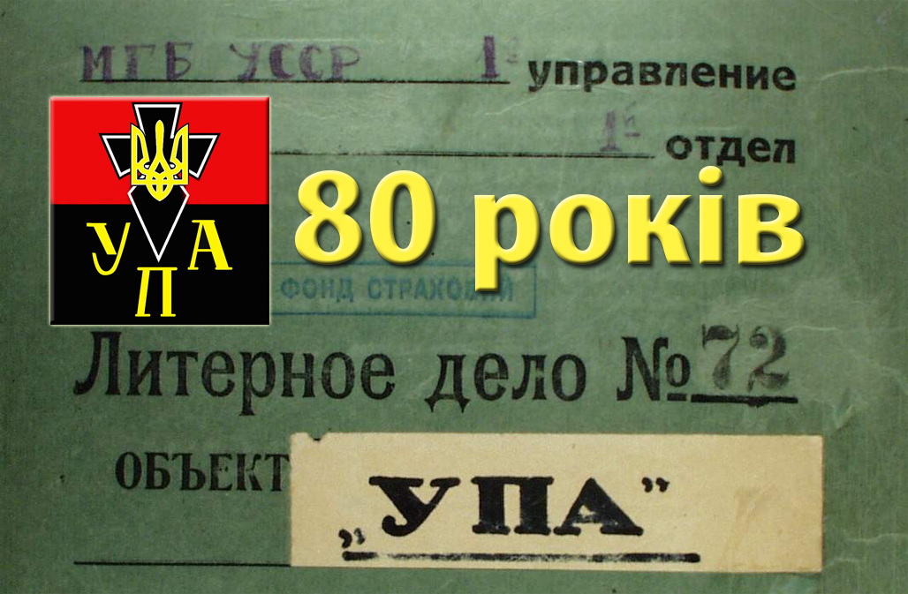

Українська повстанська армія. Історія виникнення
Зміст
До 80-річчя Української повстанської армії
До 80-річчя Української повстанської армії (відзначається 14 жовтня) і Дня захисника України Служба зовнішньої розвідки України на підставі архівних документів публікує низку матеріалів про історію створення УПА, її структуру, озброєння, тактику, кадровий склад і його вишкіл. Окрему увагу приділено особливостям діяльності розвідувальних підрозділів повстанців під час Другої світової війни і після її завершення в умовах глибокого підпілля. Символічною датою створення УПА прийнято вважати 14 жовтня 1942 року. Ця дата була закріплена постановою Української Головної Визвольної Ради, у якій зазначається: «В м. жовтні 1942 р. на Поліссі постали перші збройні відділи, що дали початок Українській Повстанській Армії. 1) Для зафіксування цього історичного моменту визначається день 14-го жовтня 1942 року днем постання УПА. 2) Для вшанування цього моменту день 14-го жовтня, що збігається з історичним козацьким святом Покрови, вводиться як святковий день УПА». Документи, що зберігаються в Галузевому державному архіві СЗР України, конкретизують часові межі утворення УПА. Водночас у них, як і в матеріалах дослідників українського національно-визвольного руху, згадується про Українську повстанську армію отамана Тараса Боровця (Бульби), створену в березні 1942 року на базі військової формації «Поліська Січ», яка діяла на поліських теренах Рівненської та Житомирської областей ще на початку Другої світової війни. Так само є згадування і про формування Української повстанської армії в січні–лютому 1943 року на базі боївок і відділів ОУН (б). Відтак новопостала УПА в подальшому діяла під егідою ОУН (б), а Тарас Боровець підпорядковані йому загони змушений був перейменувати на Українську народно-революційну армію (УНРА). Постанова про заведення справи, в якій зібрані різнопланові матеріали про УПА, датована 23 жовтнем 1943 року. У ній зазначається: «Я, ст. оперуповноважений 1 відділу 4 Управління НКДБ УРСР ст. лейтенант держбезпеки Долуда, розглянувши оперативні матеріали, які надійшли до 4 Управління НКДБ УРСР про контрреволюційну повстанську діяльність озброєних банд українських націоналістів, які називають себе Українською Повстанською Армією – УПА, постановив: «Завести літерну справу на контрреволюційне формування українських націоналістів, так зв. УПА, зареєструвавши її в обліковій групі 4 Управління НКДБ УРСР із забарвленням «Укр. нац. к-р» (повстанство)». Невдовзі за підписом народного комісара державної безпеки УРСР Сергія Савченка всім начальникам обласних управлінь НКДБ було розіслано орієнтування від 23 березня 1944 року «Про виникнення і діяльність «Української Повстанської Армії (УПА)». Нині цей документ, попри те, що він складався в надрах НКДБ і може містити викривлену тенденційну інформацію про тогочасний український визвольний рух, є своєрідним джерелом для подальшого дослідження історії УПА. Нижче наводяться витяги з цього документу (зі скороченнями).
Із розділу «Виникнення УПА»
«Не дивлячись на жорсткі репресії з боку німців, ОУН бандерівського спрямування не лише не була ліквідована, але й значно збільшила свої лави, організувавши до початку 1943 року майже скрізь в Україні свої підпільні осередки і бойові групи». «…В умовах зростаючої ненависті широких верств населення до окупантів, ОУН бандерівського спрямування вміло, використовуючи цю ненависть, повела за собою частково і соціально близькі нам елементи. У подальшому, продовжуючи небезуспішно грати на цій ненависті, бандерівці розпочали створювати своєї озброєні сили і створили так звану «Українську Повстанську Армію», оголосивши її «єдиною суверенною владою на звільнених землях України», а ОУН у звʼязку з «новими» завданнями, на відміну від мельниківської течії, перейменували в «Організацію українських націоналістів самостійників-державників» – ОУН(СД), яка ставила своїм завданням боротися за Українську самостійну соборну державу – УССД». «Докладно історія виникнення і діяльності УПА на підставі здобутих із різних джерел відомостей і документальних матеріалів має такий вигляд: 30 червня 1941 року Степан Бандера явочним порядком скликав у Львові «Українське національне зібрання», яке проголосило створення Української держави і опублікувало у звʼязку з цим спеціальну декларацію. На чолі українського національного «уряду» Бандера поставив свого заступника в ОУН Ярослава Стецька. Одночасно Бандера почав формування так званої «Української національної армії». Однак німці запропонували Бандері розпустити сформований «уряд» і анулювати опубліковану декларацію. Бандера відмовився виконати цю вимогу, після чого німці заарештували Бандеру, Стецька та інших активних учасників ОУН і цим поклали край існуванню «Українського уряду». Всій німецькій окупаційній владі в Україні 19 листопада 1941 року була надіслана директива, яка вимагала не допускати до органів самоврядування й поліції прихильників бандерівського руху, а 25 листопада 1941 року німці видали наказ про їх знищення. Внаслідок масових репресій, що розпочалися з боку німців стосовно бандерівців, останні перейшли на нелегальне становище і розпочали активну роботу зі створення підпільних оунівських організацій і бойових озброєних груп «боївок». Протягом 1942 року бандерівці здійснили велику роботу зі створення широкої мережі підпільних озброєних бойових груп на території Західної України. У березні 1943 року на основі цих бойових груп бандерівським Проводом ОУН розпочалося формування так званої «Української Повстанської Армії» (УПА), на чолі якої спочатку стояв такий собі «Юрко» (оунівський псевдонім), а в травні 1943 року – такий собі Клим Савур у званні «Головнокомандувача УПА»…
Із розділу «Практичні завдання УПА»
«За агентурними даними, показаннями захоплених учасників УПА і документами встановлено, що нині УПА ставить перед собою і активно втілює в життя такі практичні завдання:
- Підготовка і залишення в тилу Червоної армії на звільненій від окупантів території озброєних банд для диверсійної, терористичної і повстанської діяльності, організація нападів і знищення партійних і радянських органів, колгоспів, напад на дрібні підрозділи Червоної армії і захоплення її обозів.
- Підготовка кадрів оунівців для впровадження в лави Червоної армії, органи НКВС, НКДБ, міліції і радянсько-партійний апарат із завданням терору щодо командного складу Червоної армії, партійним і радянським активом та працівниками НКВС, НКДБ і міліції.
- Підготовка і організація збройного повстання проти Радянської влади, створення таємних баз продовольства, фуражу, одягу, взуття, зброї і набоїв з цією метою.
- Зривання мобілізації населення до Червоної армії шляхом націоналістичної пропаганди і примусового виведення всієї молоді до лісів. Зривання усіх заходів, які проводяться нами у звільнених районах».
Із розділу «Програмні положення УПА»
«ОУН і УПА на сторінках своїх нелегальних видань, зокрема й листівок і відозв, поширює «програмні» положення й настанови УПА, суть яких зводиться до такого. Політична боротьба українського народу за Українську державу увійшла в нову фазу. Це обумовлено зростанням внутрішніх сил українського народу і зовнішньою політичною ситуацією. Проявом організаційної боротьби за Українську державу є «Українська Повстанська Армія (УПА)». УПА, захищаючи український народ від терору окупантів, створює озброєну силу, яка закріпить завоювання української національної революції і, втілившись в українську народну армію, стане на захист УССД проти зовнішніх ворогів. УПА – це озброєна сила українського народу; вести боротьбу в лавах УПА – це почесний обовʼязок кожного громадянина України. УПА бореться: За самостійну соборну українську державу на українській землі. За новий справедливий лад і порядок в Україні без панів, поміщиків, капіталістів і більшовицьких комісарів. За новий справедливий міжнародний лад і порядок у світі, що ґрунтується на основі поваги прав кожного народу і його незалежного всебічного розвитку у власних державних формах. Проти німецьких і московських імперіалістичних загарбників, які прагнуть до поневолення і знищення українського народу. Проти імперіалістів як джерела воєн і поневолення народів. Більшовицьких парашутистів УПА вважає передовим загоном московських імперіалістів і знищує їх нарівні з німецькими грабіжницькими бандами. Сьогодні УПА – це не партизанщина. Це зародок майбутньої української збройної сили, це майбутня українська народна армія, яка вже нині збагачується всіма видами зброї, навченими рядовими і командними кадрами. УПА бореться проти імперіалістів, які поневолюють один народ іншим, і тому веде нещадну боротьбу як з гітлерівською Німеччиною, так і з більшовицькою Москвою. Ці два імперіалісти бʼються між собою за те, кому з них політично й економічно владарювати в Україні. Визнаючи право кожного народу мати власну національну державу на своїй території, УПА закликає всі поневолені народи Європи й Азії до спільної боротьби проти московських і німецьких імперіалістів».